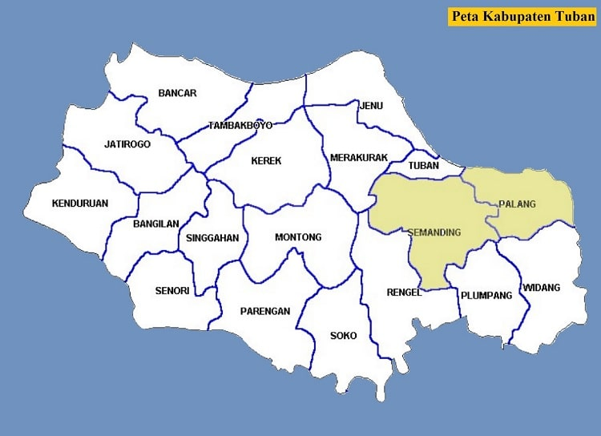
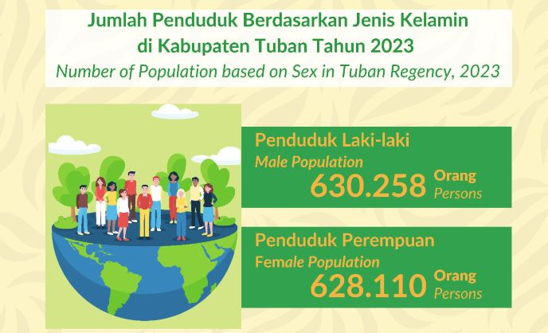

Geografi

Kabupaten Tuban terletak di pesisir utara Provinsi Jawa Timur,
berbatasan dengan:
- Utara: Laut Jawa
- Timur: Kabupaten Lamongan
- Selatan: Kabupaten Bojonegoro
- Barat: Kabupaten Rembang (Jawa Tengah)
Secara geografis, Tuban memiliki wilayah yang terdiri dari dataran
rendah, perbukitan kapur (bagian dari Pegunungan Kendeng), serta
kawasan pesisir yang cukup panjang. Kabupaten ini juga dikenal
memiliki banyak gua dan sumber air bawah tanah akibat struktur batu
kapur di wilayahnya. Letaknya yang strategis di jalur Pantura
menjadikan Tuban sebagai jalur perdagangan utama antara Jawa Timur
dan Jawa Tengah.
Demografi

Penduduk adalah faktor penting dalam membangun suatu pemerintahan
dan pembangunan. Sebab selain menjadi obyek pembangunan penduduk
sekaligus menjadi pelaku pembangunan. Untuk itu, sangatlah penting
mendapatkan data yang akurat tentang jumlah penduduk yang ada di
suatu daerah. Beberapa metode di pakai dalam menghitung jumlah
penduduk d Kabupaten Tuban, diantaranya adalah sensus penduduk.
Jumlah Penduduk berdasarkan Jenis Kelamin di Kabupaten Tuban Tahun
2023 sebesar 1.258.368 jiwa, terdiri dari 630.258 laki-laki dan
628.110 perempuan. Laju Pertumbuhan Penduduk Kabupaten Tuban Tahun
2022-2023 sebesar 1,10 Persen. Sementara itu besarnya angka Rasio
Jenis Kelamin tahun 2023 penduduk laki-laki terhadap penduduk
perempuan sebesar 100 persen. Kepadatan penduduk Kabupaten Tuban
Tahun 2023 mencapai 686 jiwa/km2. Kepadatan Penduduk di 20 Kecamatan
cukup beragam dengan kepadatan penduduk tertinggi terletak di
Kecamatan Tuban dengan Kepadatan sebesar 4.136 jiwa/Km2 dan terendah
di Kecamatan Kenduruan sebesar 350 jiwa/Km2.
Pariwisata
Kabupaten Tuban memiliki beberapa pantai eksotis yang menawarkan
keindahan alam serta suasana yang unik, di antaranya Pantai Panduri,
Pantai Kelapa, dan Pantai Boom. Pantai Panduri, yang terletak di
Kecamatan Jenu, memiliki pemandangan alami dengan pasir kecoklatan
serta ombak yang cukup tenang, cocok untuk bersantai dan menikmati
suasana laut. Di sisi lain, Pantai Kelapa di Kecamatan Tambakboyo
menyuguhkan nuansa tropis dengan deretan pohon kelapa yang rindang,
menjadikannya tempat yang ideal untuk piknik keluarga. Sementara
itu, Pantai Boom, yang berada di pusat Kota Tuban, memiliki daya
tarik berupa dermaga yang menjorok ke laut dan sering menjadi tempat
favorit untuk menikmati sunset. Dekat dengan Masjid Agung Tuban dan
Makam Sunan Bonang, pantai ini juga menjadi tujuan wisata religi
yang ramai dikunjungi. Ketiga pantai ini mencerminkan keindahan
pesisir Tuban yang masih alami dan menawarkan pengalaman wisata
bahari yang beragam.